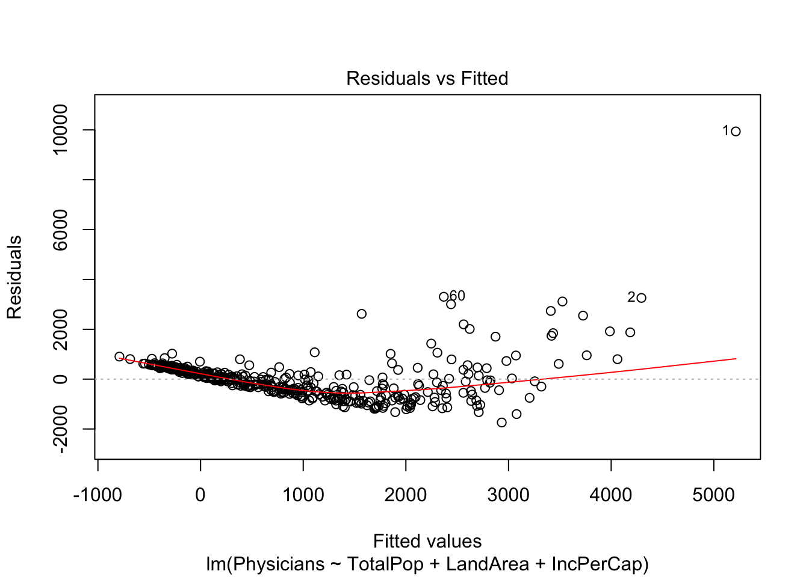

library(faraway)
CDI<-readRDS("~/Desktop/school/07_spring19/PSTAT\ 126/Final\ Project/CDI.rds")
Physicians <- CDI$Physicians
TotalPop <- log(CDI$TotalPop)
LandArea <- CDI$LandArea
IncPerCap <- CDI$IncPerCap
library(car)## Loading required package: carData##
## Attaching package: 'car'## The following objects are masked from 'package:faraway':
##
## logit, vifmodel1 <- lm(Physicians~TotalPop+LandArea+IncPerCap)avPlots(model1)In the added variable plots, it is clear that the predictor Total Population has a linear relationship with our response variable Physicians, whereas Land Area and Income per Capita have slopes close to \(0\), which implies there is no linear relationship with our response variable Physicians.
pairs(Physicians~TotalPop+LandArea+IncPerCap)According to the plots generated by the pairs() function, it appears that there is a weak linear relationship between Total Population and the number of professionally active nonfederal physicians in 1990.
summary(model1)##
## Call:
## lm(formula = Physicians ~ TotalPop + LandArea + IncPerCap)
##
## Residuals:
## Min 1Q Median 3Q Max
## -1739.9 -495.4 -5.4 375.4 9938.9
##
## Coefficients:
## Estimate Std. Error t value Pr(>|t|)
## (Intercept) -1.706e+04 7.060e+02 -24.165 <2e-16 ***
## TotalPop 1.427e+03 6.293e+01 22.683 <2e-16 ***
## LandArea -5.488e-02 2.865e-02 -1.916 0.0561 .
## IncPerCap 1.285e-02 1.190e-02 1.079 0.2811
## ---
## Signif. codes: 0 '***' 0.001 '**' 0.01 '*' 0.05 '.' 0.1 ' ' 1
##
## Residual standard error: 859.7 on 421 degrees of freedom
## Multiple R-squared: 0.6202, Adjusted R-squared: 0.6175
## F-statistic: 229.2 on 3 and 421 DF, p-value: < 2.2e-16Fitting the model gives us the coeffiencients of Total Population, Land Area, and Income per Capita respectively as \(\hat{\beta_1} = 1.427\cdot10^3, \, \hat{\beta_2} = -5.488\cdot10^{-2}\) and \(\hat{\beta_3} = 1.285\cdot10^{-2}\). For one unit increase in the natural log of Total Population, the expected change in our response Physicians is \(1.427\cdot10^3\), with all other predictors constant. For one unit increase in the Land Area, the expected change in our response Physicians is \(-5.488\cdot10^{-2}\), with all other predictors constant. For one unit increase in the Income per Cap, the expected change in our response Physicians is \(1.285\cdot10^{-2}\), with all other predictors constant.
model1.res <- model1$residuals
plot(model1, which = 1)
plot(model1, which = 2)shapiro.test(model1.res)##
## Shapiro-Wilk normality test
##
## data: model1.res
## W = 0.74213, p-value < 2.2e-16Based off of these diagnostic plots, we see that there is a clear outlier in the Residual vs Fitted Plot and the Normal Q-Q Plot. In order, to see if we should remove this outlier from the data, we will do the following Hat Values and Cooks Distance tests.
CDI.mod <- CDI[-c(1),]
Physicians1 <- CDI.mod$Physicians
TotalPop1 <- log(CDI.mod$TotalPop)
LandArea1 <- CDI.mod$LandArea
IncPerCap1 <- CDI.mod$IncPerCap
model.mod <- lm(Physicians1~TotalPop1+LandArea1+IncPerCap1)
plot(model.mod,which=1)plot(model.mod,which=2)From the Residuals vs. Fitted and the Normal Q-Q Plot, we see that the data is non-normal, non-constant variance, and non-linear. Thus we will run a Box Cox Transformation to find the best transformation for Y.
bc.mod <- boxCox(model.mod)lambda.opt <- bc.mod$x[which.max(bc.mod$y)]
lambda.opt## [1] 0.02020202Box Cox Transforms gives us an optimal \(\lambda = 0.02020202\), rounding to the nearest whole number we get: \(\lambda = 0\). This implies that we will log transform our response variable, Physicians.
model.mod1 <- lm(log(Physicians1)~TotalPop1+LandArea1+IncPerCap1)
plot(model.mod1,which =1)plot(model.mod1,which=2) #test normality
shapiro.test(summary(model.mod1)$residuals)##
## Shapiro-Wilk normality test
##
## data: summary(model.mod1)$residuals
## W = 0.98516, p-value = 0.000248By the Shapiro-Wilkes test, our new model violates the assumption of normality. Now we use powerTransform() to try to transform predictors.
pc<- powerTransform(cbind(TotalPop1,LandArea1,IncPerCap1)~1, CDI.mod)
summary(pc)## bcPower Transformations to Multinormality
## Est Power Rounded Pwr Wald Lwr Bnd Wald Upr Bnd
## TotalPop1 -6.1945 -6.19 -7.9111 -4.4779
## LandArea1 -0.0087 0.00 -0.0735 0.0561
## IncPerCap1 -0.3201 -0.50 -0.6026 -0.0375
##
## Likelihood ratio test that transformation parameters are equal to 0
## (all log transformations)
## LRT df pval
## LR test, lambda = (0 0 0) 57.84979 3 1.6923e-12
##
## Likelihood ratio test that no transformations are needed
## LRT df pval
## LR test, lambda = (1 1 1) 977.7526 3 < 2.22e-16#transform land Area and IncPerCap
LandArea2<-log(LandArea1)
IncPerCap2<-IncPerCap1^-0.5
model.trans<-lm(log(Physicians1)~TotalPop1+IncPerCap2+LandArea2)
summary(model.mod1)##
## Call:
## lm(formula = log(Physicians1) ~ TotalPop1 + LandArea1 + IncPerCap1)
##
## Residuals:
## Min 1Q Median 3Q Max
## -1.41586 -0.28888 -0.01797 0.28796 1.65979
##
## Coefficients:
## Estimate Std. Error t value Pr(>|t|)
## (Intercept) -1.020e+01 3.805e-01 -26.817 < 2e-16 ***
## TotalPop1 1.261e+00 3.392e-02 37.168 < 2e-16 ***
## LandArea1 -3.024e-05 1.514e-05 -1.997 0.0465 *
## IncPerCap1 3.501e-05 6.298e-06 5.558 4.86e-08 ***
## ---
## Signif. codes: 0 '***' 0.001 '**' 0.01 '*' 0.05 '.' 0.1 ' ' 1
##
## Residual standard error: 0.4541 on 420 degrees of freedom
## Multiple R-squared: 0.8303, Adjusted R-squared: 0.829
## F-statistic: 684.8 on 3 and 420 DF, p-value: < 2.2e-16summary(model.trans)##
## Call:
## lm(formula = log(Physicians1) ~ TotalPop1 + IncPerCap2 + LandArea2)
##
## Residuals:
## Min 1Q Median 3Q Max
## -1.42360 -0.28798 -0.01661 0.26716 1.56729
##
## Coefficients:
## Estimate Std. Error t value Pr(>|t|)
## (Intercept) -7.67280 0.55646 -13.789 < 2e-16 ***
## TotalPop1 1.26095 0.03298 38.234 < 2e-16 ***
## IncPerCap2 -164.42596 33.52788 -4.904 1.34e-06 ***
## LandArea2 -0.10561 0.02699 -3.913 0.000106 ***
## ---
## Signif. codes: 0 '***' 0.001 '**' 0.01 '*' 0.05 '.' 0.1 ' ' 1
##
## Residual standard error: 0.4475 on 420 degrees of freedom
## Multiple R-squared: 0.8352, Adjusted R-squared: 0.834
## F-statistic: 709.5 on 3 and 420 DF, p-value: < 2.2e-16plot(model.trans,which=1)plot(model.trans,which=2)shapiro.test(summary(model.trans)$residuals)##
## Shapiro-Wilk normality test
##
## data: summary(model.trans)$residuals
## W = 0.99071, p-value = 0.008994ncvTest(model.trans)## Non-constant Variance Score Test
## Variance formula: ~ fitted.values
## Chisquare = 2.304355, Df = 1, p = 0.12901Compare summaries of model.mod1 with model2. model2 has higher adjusted-R^2 and smaller residual standard error so it is a better model, but it still violated normality according to Shapiro-Wilkes test. It passes ncvTest which means variance is constant.
#test interaction and quadratic terms
test.model<-lm(log(Physicians1)~LandArea2+IncPerCap2+TotalPop1+I(LandArea2^2)+I(IncPerCap2^2)+I(TotalPop1^2)+LandArea2:IncPerCap2+LandArea2:TotalPop1+IncPerCap2:TotalPop1)
# compare summary tables
summary(model.trans)##
## Call:
## lm(formula = log(Physicians1) ~ TotalPop1 + IncPerCap2 + LandArea2)
##
## Residuals:
## Min 1Q Median 3Q Max
## -1.42360 -0.28798 -0.01661 0.26716 1.56729
##
## Coefficients:
## Estimate Std. Error t value Pr(>|t|)
## (Intercept) -7.67280 0.55646 -13.789 < 2e-16 ***
## TotalPop1 1.26095 0.03298 38.234 < 2e-16 ***
## IncPerCap2 -164.42596 33.52788 -4.904 1.34e-06 ***
## LandArea2 -0.10561 0.02699 -3.913 0.000106 ***
## ---
## Signif. codes: 0 '***' 0.001 '**' 0.01 '*' 0.05 '.' 0.1 ' ' 1
##
## Residual standard error: 0.4475 on 420 degrees of freedom
## Multiple R-squared: 0.8352, Adjusted R-squared: 0.834
## F-statistic: 709.5 on 3 and 420 DF, p-value: < 2.2e-16summary(test.model) #test model has bigger adj-r^2 and lower residual standard error##
## Call:
## lm(formula = log(Physicians1) ~ LandArea2 + IncPerCap2 + TotalPop1 +
## I(LandArea2^2) + I(IncPerCap2^2) + I(TotalPop1^2) + LandArea2:IncPerCap2 +
## LandArea2:TotalPop1 + IncPerCap2:TotalPop1)
##
## Residuals:
## Min 1Q Median 3Q Max
## -1.39751 -0.28110 -0.01611 0.26325 1.61504
##
## Coefficients:
## Estimate Std. Error t value Pr(>|t|)
## (Intercept) -1.927e+01 9.196e+00 -2.096 0.03671 *
## LandArea2 5.109e-01 5.682e-01 0.899 0.36911
## IncPerCap2 -2.264e+02 7.699e+02 -0.294 0.76880
## TotalPop1 2.815e+00 1.128e+00 2.495 0.01299 *
## I(LandArea2^2) 4.455e-02 1.697e-02 2.624 0.00900 **
## I(IncPerCap2^2) -5.821e+03 2.539e+04 -0.229 0.81875
## I(TotalPop1^2) -4.316e-02 3.819e-02 -1.130 0.25905
## LandArea2:IncPerCap2 -8.964e+00 4.293e+01 -0.209 0.83470
## LandArea2:TotalPop1 -8.883e-02 3.289e-02 -2.701 0.00721 **
## IncPerCap2:TotalPop1 1.575e+01 4.706e+01 0.335 0.73810
## ---
## Signif. codes: 0 '***' 0.001 '**' 0.01 '*' 0.05 '.' 0.1 ' ' 1
##
## Residual standard error: 0.4407 on 414 degrees of freedom
## Multiple R-squared: 0.8424, Adjusted R-squared: 0.839
## F-statistic: 245.9 on 9 and 414 DF, p-value: < 2.2e-16#test
anova(model.trans,test.model) #decision --> we need interactions## Analysis of Variance Table
##
## Model 1: log(Physicians1) ~ TotalPop1 + IncPerCap2 + LandArea2
## Model 2: log(Physicians1) ~ LandArea2 + IncPerCap2 + TotalPop1 + I(LandArea2^2) +
## I(IncPerCap2^2) + I(TotalPop1^2) + LandArea2:IncPerCap2 +
## LandArea2:TotalPop1 + IncPerCap2:TotalPop1
## Res.Df RSS Df Sum of Sq F Pr(>F)
## 1 420 84.091
## 2 414 80.404 6 3.687 3.164 0.004796 **
## ---
## Signif. codes: 0 '***' 0.001 '**' 0.01 '*' 0.05 '.' 0.1 ' ' 1#model selection
mod0<-lm(log(Physicians1)~1)
mod.selection<- step(mod0, scope=list(lower=mod0,upper=test.model), direction='forward')## Start: AIC=80.49
## log(Physicians1) ~ 1
##
## Df Sum of Sq RSS AIC
## + TotalPop1 1 414.62 95.61 -627.51
## + I(TotalPop1^2) 1 412.77 97.46 -619.39
## + IncPerCap2 1 133.33 376.90 -45.93
## + I(IncPerCap2^2) 1 127.79 382.44 -39.74
## + LandArea2 1 9.79 500.44 74.28
## + I(LandArea2^2) 1 6.39 503.84 77.15
## <none> 510.23 80.49
##
## Step: AIC=-627.51
## log(Physicians1) ~ TotalPop1
##
## Df Sum of Sq RSS AIC
## + IncPerCap2 1 8.4566 87.158 -664.77
## + I(IncPerCap2^2) 1 8.3564 87.258 -664.29
## + LandArea2 1 6.7073 88.907 -656.35
## + I(LandArea2^2) 1 5.9300 89.684 -652.66
## + I(TotalPop1^2) 1 1.0934 94.521 -630.39
## <none> 95.614 -627.51
##
## Step: AIC=-664.77
## log(Physicians1) ~ TotalPop1 + IncPerCap2
##
## Df Sum of Sq RSS AIC
## + LandArea2 1 3.06618 84.091 -677.96
## + I(LandArea2^2) 1 2.43009 84.727 -674.76
## + I(TotalPop1^2) 1 0.59869 86.559 -665.70
## <none> 87.158 -664.77
## + IncPerCap2:TotalPop1 1 0.03692 87.121 -662.95
## + I(IncPerCap2^2) 1 0.00014 87.157 -662.78
##
## Step: AIC=-677.96
## log(Physicians1) ~ TotalPop1 + IncPerCap2 + LandArea2
##
## Df Sum of Sq RSS AIC
## + LandArea2:TotalPop1 1 1.65029 82.441 -684.36
## + I(LandArea2^2) 1 1.58644 82.505 -684.04
## + LandArea2:IncPerCap2 1 0.72184 83.370 -679.61
## + I(TotalPop1^2) 1 0.40385 83.688 -678.00
## <none> 84.091 -677.96
## + IncPerCap2:TotalPop1 1 0.03988 84.052 -676.16
## + I(IncPerCap2^2) 1 0.00004 84.091 -675.96
##
## Step: AIC=-684.36
## log(Physicians1) ~ TotalPop1 + IncPerCap2 + LandArea2 + TotalPop1:LandArea2
##
## Df Sum of Sq RSS AIC
## + I(LandArea2^2) 1 1.58180 80.859 -690.58
## <none> 82.441 -684.36
## + I(TotalPop1^2) 1 0.25907 82.182 -683.70
## + IncPerCap2:TotalPop1 1 0.24804 82.193 -683.64
## + LandArea2:IncPerCap2 1 0.18936 82.252 -683.34
## + I(IncPerCap2^2) 1 0.03638 82.405 -682.55
##
## Step: AIC=-690.58
## log(Physicians1) ~ TotalPop1 + IncPerCap2 + LandArea2 + I(LandArea2^2) +
## TotalPop1:LandArea2
##
## Df Sum of Sq RSS AIC
## <none> 80.859 -690.58
## + I(TotalPop1^2) 1 0.36263 80.497 -690.48
## + IncPerCap2:TotalPop1 1 0.18892 80.670 -689.57
## + I(IncPerCap2^2) 1 0.07535 80.784 -688.97
## + LandArea2:IncPerCap2 1 0.02689 80.832 -688.72summary(mod.selection) # forward selection says to choose 5 predictor model with land area^2 and interaction between total pop and land area##
## Call:
## lm(formula = log(Physicians1) ~ TotalPop1 + IncPerCap2 + LandArea2 +
## I(LandArea2^2) + TotalPop1:LandArea2)
##
## Residuals:
## Min 1Q Median 3Q Max
## -1.38860 -0.27596 -0.02478 0.26030 1.59008
##
## Coefficients:
## Estimate Std. Error t value Pr(>|t|)
## (Intercept) -12.76605 2.60918 -4.893 1.42e-06 ***
## TotalPop1 1.80663 0.19625 9.206 < 2e-16 ***
## IncPerCap2 -179.14943 33.20060 -5.396 1.14e-07 ***
## LandArea2 0.44158 0.41900 1.054 0.29254
## I(LandArea2^2) 0.04134 0.01446 2.860 0.00445 **
## TotalPop1:LandArea2 -0.08558 0.02934 -2.917 0.00373 **
## ---
## Signif. codes: 0 '***' 0.001 '**' 0.01 '*' 0.05 '.' 0.1 ' ' 1
##
## Residual standard error: 0.4398 on 418 degrees of freedom
## Multiple R-squared: 0.8415, Adjusted R-squared: 0.8396
## F-statistic: 443.9 on 5 and 418 DF, p-value: < 2.2e-16mod.selection11<- step(test.model, scope=list(lower=mod0,upper=test.model), direction='backward')## Start: AIC=-684.97
## log(Physicians1) ~ LandArea2 + IncPerCap2 + TotalPop1 + I(LandArea2^2) +
## I(IncPerCap2^2) + I(TotalPop1^2) + LandArea2:IncPerCap2 +
## LandArea2:TotalPop1 + IncPerCap2:TotalPop1
##
## Df Sum of Sq RSS AIC
## - LandArea2:IncPerCap2 1 0.00847 80.413 -686.93
## - I(IncPerCap2^2) 1 0.01021 80.415 -686.92
## - IncPerCap2:TotalPop1 1 0.02174 80.426 -686.86
## - I(TotalPop1^2) 1 0.24808 80.652 -685.66
## <none> 80.404 -684.97
## - I(LandArea2^2) 1 1.33764 81.742 -679.97
## - LandArea2:TotalPop1 1 1.41635 81.821 -679.57
##
## Step: AIC=-686.93
## log(Physicians1) ~ LandArea2 + IncPerCap2 + TotalPop1 + I(LandArea2^2) +
## I(IncPerCap2^2) + I(TotalPop1^2) + LandArea2:TotalPop1 +
## IncPerCap2:TotalPop1
##
## Df Sum of Sq RSS AIC
## - IncPerCap2:TotalPop1 1 0.02090 80.434 -688.81
## - I(IncPerCap2^2) 1 0.03220 80.445 -688.76
## - I(TotalPop1^2) 1 0.24131 80.654 -687.65
## <none> 80.413 -686.93
## - LandArea2:TotalPop1 1 1.53221 81.945 -680.92
## - I(LandArea2^2) 1 1.65453 82.067 -680.29
##
## Step: AIC=-688.81
## log(Physicians1) ~ LandArea2 + IncPerCap2 + TotalPop1 + I(LandArea2^2) +
## I(IncPerCap2^2) + I(TotalPop1^2) + LandArea2:TotalPop1
##
## Df Sum of Sq RSS AIC
## - IncPerCap2 1 0.00007 80.434 -690.81
## - I(IncPerCap2^2) 1 0.06290 80.497 -690.48
## - I(TotalPop1^2) 1 0.35018 80.784 -688.97
## <none> 80.434 -688.81
## - LandArea2:TotalPop1 1 1.53546 81.969 -682.80
## - I(LandArea2^2) 1 1.71991 82.154 -681.84
##
## Step: AIC=-690.81
## log(Physicians1) ~ LandArea2 + TotalPop1 + I(LandArea2^2) + I(IncPerCap2^2) +
## I(TotalPop1^2) + LandArea2:TotalPop1
##
## Df Sum of Sq RSS AIC
## - I(TotalPop1^2) 1 0.3502 80.784 -690.97
## <none> 80.434 -690.81
## - LandArea2:TotalPop1 1 1.5690 82.003 -684.62
## - I(LandArea2^2) 1 1.7254 82.159 -683.82
## - I(IncPerCap2^2) 1 5.5042 85.938 -664.75
##
## Step: AIC=-690.97
## log(Physicians1) ~ LandArea2 + TotalPop1 + I(LandArea2^2) + I(IncPerCap2^2) +
## LandArea2:TotalPop1
##
## Df Sum of Sq RSS AIC
## <none> 80.784 -690.97
## - I(LandArea2^2) 1 1.6238 82.408 -684.53
## - LandArea2:TotalPop1 1 1.7419 82.526 -683.93
## - I(IncPerCap2^2) 1 5.7076 86.492 -664.03summary(mod.selection11) # backward elimination says to choose 5 pred model with land area, total pop, land area^2, incpercap^2 and landarea:totalpop##
## Call:
## lm(formula = log(Physicians1) ~ LandArea2 + TotalPop1 + I(LandArea2^2) +
## I(IncPerCap2^2) + LandArea2:TotalPop1)
##
## Residuals:
## Min 1Q Median 3Q Max
## -1.39260 -0.27178 -0.02089 0.26148 1.58538
##
## Coefficients:
## Estimate Std. Error t value Pr(>|t|)
## (Intercept) -1.365e+01 2.591e+00 -5.268 2.21e-07 ***
## LandArea2 4.661e-01 4.188e-01 1.113 0.26646
## TotalPop1 1.825e+00 1.961e-01 9.310 < 2e-16 ***
## I(LandArea2^2) 4.192e-02 1.446e-02 2.899 0.00395 **
## I(IncPerCap2^2) -1.184e+04 2.179e+03 -5.434 9.36e-08 ***
## LandArea2:TotalPop1 -8.811e-02 2.935e-02 -3.002 0.00284 **
## ---
## Signif. codes: 0 '***' 0.001 '**' 0.01 '*' 0.05 '.' 0.1 ' ' 1
##
## Residual standard error: 0.4396 on 418 degrees of freedom
## Multiple R-squared: 0.8417, Adjusted R-squared: 0.8398
## F-statistic: 444.4 on 5 and 418 DF, p-value: < 2.2e-16#forward model
new.model<-lm(log(Physicians1)~TotalPop1+IncPerCap2+LandArea2+I(LandArea2^2)+TotalPop1:LandArea2)
Anova(new.model,test.model) #reject null --> simplified model is better## Anova Table (Type II tests)
##
## Response: log(Physicians1)
## Sum Sq Df F value Pr(>F)
## TotalPop1 273.243 1 1406.9222 < 2.2e-16 ***
## IncPerCap2 5.632 1 29.0010 1.215e-07 ***
## LandArea2 2.223 1 11.4437 0.0007857 ***
## I(LandArea2^2) 1.582 1 8.1446 0.0045358 **
## TotalPop1:LandArea2 1.646 1 8.4734 0.0037985 **
## Residuals 80.404 414
## ---
## Signif. codes: 0 '***' 0.001 '**' 0.01 '*' 0.05 '.' 0.1 ' ' 1ncvTest(new.model) #constant variance## Non-constant Variance Score Test
## Variance formula: ~ fitted.values
## Chisquare = 1.610426, Df = 1, p = 0.20443shapiro.test(summary(new.model)$residuals) ##
## Shapiro-Wilk normality test
##
## data: summary(new.model)$residuals
## W = 0.98988, p-value = 0.005104influenceIndexPlot(new.model, id=TRUE)#backward model
new.model1<-lm(log(Physicians1)~LandArea2+TotalPop1+I(LandArea2^2)+I(IncPerCap2^2)+LandArea2:TotalPop1)
anova(new.model1,test.model) #reject null--> simplified model is better## Analysis of Variance Table
##
## Model 1: log(Physicians1) ~ LandArea2 + TotalPop1 + I(LandArea2^2) + I(IncPerCap2^2) +
## LandArea2:TotalPop1
## Model 2: log(Physicians1) ~ LandArea2 + IncPerCap2 + TotalPop1 + I(LandArea2^2) +
## I(IncPerCap2^2) + I(TotalPop1^2) + LandArea2:IncPerCap2 +
## LandArea2:TotalPop1 + IncPerCap2:TotalPop1
## Res.Df RSS Df Sum of Sq F Pr(>F)
## 1 418 80.784
## 2 414 80.404 4 0.37967 0.4887 0.744ncvTest(new.model1)## Non-constant Variance Score Test
## Variance formula: ~ fitted.values
## Chisquare = 1.380493, Df = 1, p = 0.24002shapiro.test(summary(new.model1)$residuals)##
## Shapiro-Wilk normality test
##
## data: summary(new.model1)$residuals
## W = 0.99013, p-value = 0.00606par(mfrow=c(1,2))
plot(model.trans,which=1)
plot(model.trans,which=2)par(mfrow=c(1,2))
plot(new.model,which=1)
plot(new.model,which=2)pc2<- powerTransform(cbind(TotalPop1,LandArea2,IncPerCap2)~1, CDI.mod)
summary(pc2)## bcPower Transformations to Multinormality
## Est Power Rounded Pwr Wald Lwr Bnd Wald Upr Bnd
## TotalPop1 -6.1887 -6.19 -8.0292 -4.3481
## LandArea2 1.0813 1.00 0.6722 1.4904
## IncPerCap2 0.6423 1.00 0.0774 1.2072
##
## Likelihood ratio test that transformation parameters are equal to 0
## (all log transformations)
## LRT df pval
## LR test, lambda = (0 0 0) 86.55739 3 < 2.22e-16
##
## Likelihood ratio test that no transformations are needed
## LRT df pval
## LR test, lambda = (1 1 1) 75.10069 3 3.3307e-16Using the anova funtion to compare our two models, we reject the null hypothesis and conclude our model with the interactive terms is better. But it still violated normality.
Fitting the model gives us the coeffiencients of Total Population, Land Area, and Income per Capita respectively as \(\hat{\beta_1} = -1.367*10^{3}, \, \hat{\beta_2} = -8.318*10^{-2}\) and \(\hat{\beta_3} = -1.708*10^{2}\). For one unit increase in the transformed Total Population, the expected change in our response Physicians is \(-1.367*10^{3}\), with all other predictors constant. For one unit increase in the transformed Land Area, the expected change in our response Physicians is \(-8.318*10^{-2}\), with all other predictors constant. For one unit increase in the transformed Income per Cap, the expected change in our response Physicians is \(-1.708*10^{2}\), with all other predictors constant.
We will conduct a global F-test to test the existence of a linear relationship.
confint(model.mod1,level=0.95)## 2.5 % 97.5 %
## (Intercept) -1.095186e+01 -9.456019e+00
## TotalPop1 1.194075e+00 1.327424e+00
## LandArea1 -6.000077e-05 -4.743953e-07
## IncPerCap1 2.262518e-05 4.738589e-05Hypothesis: \(H_0: \beta_1 = 0\) vs \(H_1: \beta_1 \neq 0\)
Test Statistic: This is given by the summary table of our full model
summary(model.mod1)##
## Call:
## lm(formula = log(Physicians1) ~ TotalPop1 + LandArea1 + IncPerCap1)
##
## Residuals:
## Min 1Q Median 3Q Max
## -1.41586 -0.28888 -0.01797 0.28796 1.65979
##
## Coefficients:
## Estimate Std. Error t value Pr(>|t|)
## (Intercept) -1.020e+01 3.805e-01 -26.817 < 2e-16 ***
## TotalPop1 1.261e+00 3.392e-02 37.168 < 2e-16 ***
## LandArea1 -3.024e-05 1.514e-05 -1.997 0.0465 *
## IncPerCap1 3.501e-05 6.298e-06 5.558 4.86e-08 ***
## ---
## Signif. codes: 0 '***' 0.001 '**' 0.01 '*' 0.05 '.' 0.1 ' ' 1
##
## Residual standard error: 0.4541 on 420 degrees of freedom
## Multiple R-squared: 0.8303, Adjusted R-squared: 0.829
## F-statistic: 684.8 on 3 and 420 DF, p-value: < 2.2e-16From the summary table, we see that the F-statistic has a value of \(639\) with corresponding p-value of \(p-value < 2.2*10^{-16}\).
Decision Rule: Reject \(H_0\) when F is large, or when the p-value is less than the significance level \(\alpha = 0.01\). In this case \(p-value = 2.2*10^{-16} < 0.05 = \alpha\). Thus we reject the null hypothesis. We conclude that is at least one significant linear relationship between the predictors and the response at significance level of \(\alpha = 0.01\).
#use ncvTest on the full model to test whether or not the variance is constant
ncvTest(model.mod1)## Non-constant Variance Score Test
## Variance formula: ~ fitted.values
## Chisquare = 1.223083, Df = 1, p = 0.26876According to the output of the Non-constant Variance Score Test, at a significance of \(\alpha=0.05\), we can reject the null hypothesis that the variance of the residuals is constant. This aligns with the plot of the standardized residuals vs. fitted values.
#refit the model using WLS due to non-constant variance
model.mod.wlm<-lm(log(Physicians)~.,data=CDI.mod,weights=1/model.mod1$fitted.values)
plot(model.mod.wlm,which=3)## Warning: not plotting observations with leverage one:
## 1, 2, 5, 8, 9, 10, 13, 14, 15, 16, 17, 18, 20, 21, 25, 28, 29, 30, 31, 32, 34, 35, 36, 37, 38, 40, 42, 44, 45, 46, 48, 49, 52, 55, 56, 57, 60, 61, 63, 64, 65, 67, 68, 69, 71, 72, 74, 78, 79, 81, 82, 83, 84, 85, 86, 87, 88, 89, 92, 93, 94, 95, 96, 98, 99, 101, 102, 103, 104, 105, 106, 107, 108, 109, 110, 111, 113, 114, 115, 116, 117, 118, 120, 121, 122, 123, 124, 125, 126, 127, 128, 129, 130, 131, 132, 133, 134, 135, 137, 138, 139, 141, 143, 144, 145, 148, 150, 151, 153, 155, 158, 159, 160, 161, 162, 163, 165, 167, 168, 169, 170, 171, 172, 174, 176, 177, 178, 179, 180, 181, 182, 183, 184, 186, 188, 189, 191, 194, 195, 196, 197, 198, 200, 201, 202, 204, 205, 206, 207, 208, 209, 210, 211, 212, 213, 215, 216, 217, 218, 219, 222, 223, 228, 229, 230, 231, 232, 233, 234, 235, 236, 237, 238, 239, 240, 241, 242, 243, 245, 246, 247, 248, 249, 250, 251, 252, 253, 254, 255, 256, 257, 258, 260, 261, 262, 263, 264, 265, 267, 269, 270, 271, 272, 273, 274, 275, 276, 277, 278, 280, 282, 284, 285, 286, 287, 288, 289, 290, 291, 293, 294, 295, 296, 297, 298, 303, 304, 305, 306, 307, 309, 310, 311, 312, 313, 314, 315, 316, 317, 318, 322, 323, 325, 326, 327, 328, 330, 332, 333, 334, 335, 336, 337, 338, 339, 343, 344, 345, 346, 347, 348, 349, 350, 351, 352, 355, 356, 357, 358, 360, 361, 362, 363, 364, 365, 366, 367, 368, 370, 371, 372, 373, 374, 375, 376, 377, 378, 379, 380, 381, 383, 384, 386, 387, 389, 392, 393, 394, 395, 396, 397, 398, 399, 400, 401, 402, 403, 405, 406, 407, 409, 410, 412, 413, 414, 415, 416, 419, 420, 421, 423, 424Now, we are going to investigate the model:
\(E(Physicians)=\hat\beta_0+(TotalPop)xi_1+(Region)xi_2\)
Region <- CDI$Region
x1 <- ifelse(as.character(Region) == '1', 1,0)
x2 <- ifelse(as.character(Region) == '2', 1,0)
x3 <- ifelse(as.character(Region) == '3', 1,0)
x4 <- ifelse(as.character(Region) == '4', 1,0)
personal_inc<-CDI$PersonalInc
categ.lm<-lm(log(Physicians)~log(TotalPop)+personal_inc+x1+x2+x3)
summary(categ.lm)##
## Call:
## lm(formula = log(Physicians) ~ log(TotalPop) + personal_inc +
## x1 + x2 + x3)
##
## Residuals:
## Min 1Q Median 3Q Max
## -1.42131 -0.31860 -0.02713 0.26241 1.67826
##
## Coefficients:
## Estimate Std. Error t value Pr(>|t|)
## (Intercept) -3.595e+01 1.686e+00 -21.322 <2e-16 ***
## log(TotalPop) 1.666e+01 6.767e-01 24.613 <2e-16 ***
## personal_inc 2.524e-06 4.166e-06 0.606 0.5450
## x1 1.233e-01 7.223e-02 1.707 0.0886 .
## x2 1.640e-02 7.245e-02 0.226 0.8211
## x3 1.037e-01 6.759e-02 1.535 0.1256
## ---
## Signif. codes: 0 '***' 0.001 '**' 0.01 '*' 0.05 '.' 0.1 ' ' 1
##
## Residual standard error: 0.4725 on 419 degrees of freedom
## Multiple R-squared: 0.821, Adjusted R-squared: 0.8189
## F-statistic: 384.3 on 5 and 419 DF, p-value: < 2.2e-16Region 1: \(\hat{Y}=(-1.088\cdot10^{1})+1.360log(TotalPop)-2.712PersonalInc+1.3\cdot10^{-1}\)
Region 2: \(\hat{Y}=(-1.088\cdot10^{1})+1.360log(TotalPop)-2.712PersonalInc+1.913\cdot10^{-2}\)
Region 3: \(\hat{Y}=(-1.088\cdot10^{1})+1.360log(TotalPop)-2.712PersonalInc+1.039\cdot10^{-1}\)
Region 4: \(\hat{Y}=(-1.088\cdot10^{1})+1.360log(TotalPop)-2.712PersonalInc\)
This model is called a parallel regression model because they have the same slopes, making each line parallel to each other.
model.full<-lm(log(Physicians)~log(TotalPop)+Region)
model.red<-lm(log(Physicians)~log(TotalPop))
anova(model.red,model.full)## Analysis of Variance Table
##
## Model 1: log(Physicians) ~ log(TotalPop)
## Model 2: log(Physicians) ~ log(TotalPop) + Region
## Res.Df RSS Df Sum of Sq F Pr(>F)
## 1 423 94.734
## 2 422 94.472 1 0.2622 1.1712 0.2798After controlling the effects of Region, we have found that the reduced model is more favorable than the full model. Since our p-value is \(0.2608\), we do not have enough evidence to reject the null hypothesis \(H_0\).
pop65<-CDI$Pop65
crimes<-CDI$Crimes
bachelor<-CDI$Bachelor
poverty<-CDI$Poverty
mod.0<-lm(log(Physicians)~1)
mod.1<-lm(log(Physicians)~log(TotalPop)+pop65+crimes+bachelor+poverty+personal_inc)
step(mod.0,scope=list(lower=mod.0,upper=mod.1),direction='forward')## Start: AIC=89.88
## log(Physicians) ~ 1
##
## Df Sum of Sq RSS AIC
## + log(TotalPop) 1 427.89 94.73 -633.93
## + personal_inc 1 289.44 233.19 -251.11
## + crimes 1 173.81 348.81 -79.96
## + bachelor 1 116.44 406.18 -15.25
## <none> 522.62 89.88
## + pop65 1 0.30 522.32 91.63
## + poverty 1 0.01 522.61 91.87
##
## Step: AIC=-633.93
## log(Physicians) ~ log(TotalPop)
##
## Df Sum of Sq RSS AIC
## + bachelor 1 15.4065 79.328 -707.36
## + pop65 1 1.1719 93.562 -637.22
## + poverty 1 0.7974 93.937 -635.52
## <none> 94.734 -633.93
## + personal_inc 1 0.0645 94.670 -632.22
## + crimes 1 0.0091 94.725 -631.97
##
## Step: AIC=-707.36
## log(Physicians) ~ log(TotalPop) + bachelor
##
## Df Sum of Sq RSS AIC
## + poverty 1 7.7258 71.602 -748.91
## + pop65 1 7.0691 72.259 -745.03
## <none> 79.328 -707.36
## + crimes 1 0.2844 79.043 -706.89
## + personal_inc 1 0.0003 79.327 -705.36
##
## Step: AIC=-748.91
## log(Physicians) ~ log(TotalPop) + bachelor + poverty
##
## Df Sum of Sq RSS AIC
## + pop65 1 10.1703 61.432 -812.02
## <none> 71.602 -748.91
## + personal_inc 1 0.0523 71.550 -747.22
## + crimes 1 0.0012 71.601 -746.92
##
## Step: AIC=-812.02
## log(Physicians) ~ log(TotalPop) + bachelor + poverty + pop65
##
## Df Sum of Sq RSS AIC
## <none> 61.432 -812.02
## + personal_inc 1 0.036793 61.395 -810.27
## + crimes 1 0.013080 61.419 -810.11##
## Call:
## lm(formula = log(Physicians) ~ log(TotalPop) + bachelor + poverty +
## pop65)
##
## Coefficients:
## (Intercept) log(TotalPop) bachelor poverty pop65
## -33.92497 15.17194 0.04569 0.03821 0.04185After applying the forward selection algorithm, using AIC as a criterion function, we have found that the best model is the one that has 4 predictors: log(TotalPop), bachelor, poverty, and pop65.
step(mod.1,scope=list(lower=mod.0,upper=mod.1),direction='backward')## Start: AIC=-808.27
## log(Physicians) ~ log(TotalPop) + pop65 + crimes + bachelor +
## poverty + personal_inc
##
## Df Sum of Sq RSS AIC
## - crimes 1 0.000 61.395 -810.27
## - personal_inc 1 0.024 61.419 -810.11
## <none> 61.395 -808.27
## - poverty 1 9.933 71.328 -746.54
## - pop65 1 10.112 71.507 -745.48
## - bachelor 1 30.850 92.245 -637.25
## - log(TotalPop) 1 105.350 166.745 -385.64
##
## Step: AIC=-810.27
## log(Physicians) ~ log(TotalPop) + pop65 + bachelor + poverty +
## personal_inc
##
## Df Sum of Sq RSS AIC
## - personal_inc 1 0.037 61.432 -812.02
## <none> 61.395 -810.27
## - pop65 1 10.155 71.550 -747.22
## - poverty 1 10.856 72.251 -743.08
## - bachelor 1 31.248 92.643 -637.42
## - log(TotalPop) 1 105.707 167.102 -386.73
##
## Step: AIC=-812.02
## log(Physicians) ~ log(TotalPop) + pop65 + bachelor + poverty
##
## Df Sum of Sq RSS AIC
## <none> 61.43 -812.02
## - pop65 1 10.170 71.60 -748.91
## - poverty 1 10.827 72.26 -745.03
## - bachelor 1 31.336 92.77 -638.85
## - log(TotalPop) 1 291.851 353.28 -70.55##
## Call:
## lm(formula = log(Physicians) ~ log(TotalPop) + pop65 + bachelor +
## poverty)
##
## Coefficients:
## (Intercept) log(TotalPop) pop65 bachelor poverty
## -33.92497 15.17194 0.04185 0.04569 0.03821After applying the backwards selection algorithm, using AIC as a criterion function, we have found that the best model is the one that has 4 predictors: log(TotalPop), bachelor, poverty, and pop65.
library(leaps)
model.reg<-regsubsets(cbind(log(TotalPop),Region,pop65,crimes,bachelor,poverty),log(Physicians),data=CDI)
summary.reg<-summary(model.reg)
summary.reg$adjr2## [1] 0.8183053 0.8474934 0.8620192 0.8813360 0.8834030 0.8831461summary.reg$cp## [1] 236.717387 131.753984 80.115728 11.505846 5.078553 7.000000summary.reg$bic## [1] -713.7060 -783.0859 -820.5816 -879.6381 -882.0677 -876.0954summary.reg## Subset selection object
## 6 Variables (and intercept)
## Forced in Forced out
## FALSE FALSE
## Region FALSE FALSE
## pop65 FALSE FALSE
## crimes FALSE FALSE
## bachelor FALSE FALSE
## poverty FALSE FALSE
## 1 subsets of each size up to 6
## Selection Algorithm: exhaustive
## Region pop65 crimes bachelor poverty
## 1 ( 1 ) "*" " " " " " " " " " "
## 2 ( 1 ) "*" " " " " " " "*" " "
## 3 ( 1 ) "*" " " " " " " "*" "*"
## 4 ( 1 ) "*" " " "*" " " "*" "*"
## 5 ( 1 ) "*" "*" "*" " " "*" "*"
## 6 ( 1 ) "*" "*" "*" "*" "*" "*"According the the adjusted adjusted \(R^{2}\),\(Mallows C_p\), and BIC values from the regsubsets output, the model with 5 predictors is the best one. However, since both the forwards and backwards elimination algorithms found that the model with 4 predictors is the best one, we are going to run a partial F-test on that model.
physicians.old<-lm(log(Physicians)~log(TotalPop))
physicians.new<-lm(log(Physicians)~log(TotalPop)+bachelor+poverty+pop65+personal_inc)
anova(physicians.old,physicians.new)## Analysis of Variance Table
##
## Model 1: log(Physicians) ~ log(TotalPop)
## Model 2: log(Physicians) ~ log(TotalPop) + bachelor + poverty + pop65 +
## personal_inc
## Res.Df RSS Df Sum of Sq F Pr(>F)
## 1 423 94.734
## 2 419 61.395 4 33.339 56.882 < 2.2e-16 ***
## ---
## Signif. codes: 0 '***' 0.001 '**' 0.01 '*' 0.05 '.' 0.1 ' ' 1Hypothesis: \(H_0:\beta_1=0\), \(H_1:\beta_1\neq1\)
Result: With a p-value of \(2.2\cdot10^{-16}\), we have significant evidence to reject the null hypothesis.
Conclusion: At \(\alpha=0.05\), the improvement from adding the predictors: Pop65, Crimes, Bachelor, Poverty and PersonalInc is statistically significant. According to the partial F-test, the new model is better than the old model.
physicians.hats<-hatvalues(physicians.new)
physicans.cooks<-cooks.distance(physicians.new)
influenceIndexPlot(physicians.new,id=TRUE)According to the diagnostic plots of the leaverage and Cook’s Distance values, the data on rows \(114\), \(119\), and \(179\) are influential points.
plot(physicians.new,which=3)summary(physicians.new)##
## Call:
## lm(formula = log(Physicians) ~ log(TotalPop) + bachelor + poverty +
## pop65 + personal_inc)
##
## Residuals:
## Min 1Q Median 3Q Max
## -1.40985 -0.23094 0.02089 0.21941 1.30266
##
## Coefficients:
## Estimate Std. Error t value Pr(>|t|)
## (Intercept) -3.338e+01 1.365e+00 -24.450 < 2e-16 ***
## log(TotalPop) 1.495e+01 5.566e-01 26.859 < 2e-16 ***
## bachelor 4.564e-02 3.125e-03 14.603 < 2e-16 ***
## poverty 3.840e-02 4.461e-03 8.607 < 2e-16 ***
## pop65 4.182e-02 5.024e-03 8.325 1.21e-15 ***
## personal_inc 1.697e-06 3.386e-06 0.501 0.617
## ---
## Signif. codes: 0 '***' 0.001 '**' 0.01 '*' 0.05 '.' 0.1 ' ' 1
##
## Residual standard error: 0.3828 on 419 degrees of freedom
## Multiple R-squared: 0.8825, Adjusted R-squared: 0.8811
## F-statistic: 629.5 on 5 and 419 DF, p-value: < 2.2e-16